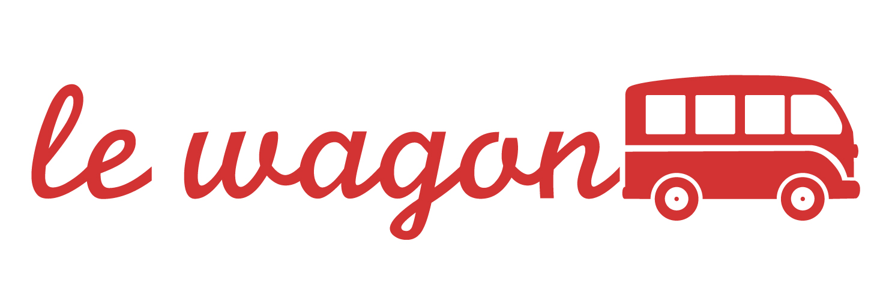

PKFA former E&Y team – José Gonzaga Rosa (Partner) and Luiz Maltez (Manager) – had just recently joined PKF to create a new department. Given the dimention (3/4 people) and the embryonic state of the department, I had space to have an active part in the optimization of processes*, which was enabled by the open-mindness of my superiors. The following were my main responsibilities:
*Example - I developed (in VBA) a template for creating financial models in EXCEL, which was complemented with pre-programed user forms with diverse functionalities related to the organization of the workbook and to time optimization. |
|
|  |
Le WagonLe Wagon is rated among the 3 best coding bootcamps in the world according to Coursereport and Switchup. Amongst the skills I acquired are the following:
|
 |
Catolica Lisbon School of Business and EconomicsI will add some content later. I will add some content later. I will add some content later. I will add some content later. I will add some content later. I will add some content later. I will add some content later. I will add some content later. I will add some content later. I will add some content later. I will add some content later. I will add some content later. I will add some content later. I will add some content later. I will add some content later. I will add some content later. |